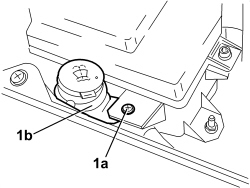
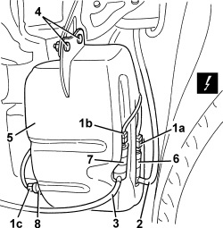
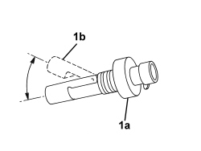

5050A10 WINDSCREEN WASHER FLUID RESERVOIR (IN ENGINE COMPARTMENT) - R+R
- Path
- Procedures > 50 AUXILIARY UNITS > 5050 SCREEN WASHERS AND HEADLAMP WASH/WIPE > 5050A WINDSCREEN AND HEADLAMP WASHER RESERVOIR > 5050A10 WINDSCREEN WASHER FLUID RESERVOIR (IN ENGINE COMPARTMENT) - R+R
- Kind
- repair procedure (removal / refitting; the operation number is the code)
- Applies to
- all engines; all production periods
- Interactive page
- https://sloeber94.github.io/elrnDB/alfa/159/en/#/939010943
Applies to: all engines; all production periods
 Removing
Removing
 Refitting
Refitting- Position the vehicle on a lift.
- Open the bonnet.
1. Undo the upper bolt (1a) fixing the windscreen washer fluid reservoir (1b).

Applies to: all engines; all production periods
Op. 7055B54 UNDER ENGINE PROTECTION/GUARD - R.R.
Op. 5050A11 WINDSCREEN WASHER FLUID RESERVOIR SUPPORT - R. R.
1. Disconnect the electrical connections (1a, 1b, 1c).
Description | Component |
|---|---|
WINDSCREEN/REARSCREEN ELECTRIC WASHER PUMP MOTOR | |
HEADLAMP WASHER ELECTRIC PUMP MOTOR | |
COMPARTMENT MOTOR |
2. Disconnect the supply pipe to the windscreen washer.
3. Disconnect the supply pipe to the headlamp washer.
4. Undo the bolts.
5. Remove the windscreen-headlamp washer fluid reservoir.
6. If necessary, remove the windscreen washer fluid pump, releasing it from the housing (press-fit).
7. If necessary, remove the headlamp washer fluid pump, releasing it from the housing (press-fit).
8. If necessary, remove the windscreen-headlamp washer fluid level sensor, releasing it from the housing (press-fit).

Applies to: all engines; all production periods
Refitting
Removing- Check that the screen washer fluid reservoir is not damaged.
- If removed, refit the screen washer fluid pump, fitting it in place.
- If removed, refit the headlamp washer fluid pump, fitting it in place.
1. If removed, refit the screen-headlamp washer fluid level sensor (1a), fitting it in place positioning the float (1b) towards the top.

Applies to: all engines; all production periods
- Position the windscreen washer fluid reservoir.
- Tighten the bolts.
- Connect the supply pipe to the headlamp washer.
- Connect the supply pipe to the windscreen washer.
- Connect the electrical connections.
Op. 5050A11 WINDSCREEN WASHER FLUID RESERVOIR SUPPORT - R. R.
Op. 7055B54 UNDER ENGINE PROTECTION/GUARD - R.R.
- Tighten the upper bolt fixing the windscreen washer fluid reservoir.
- Refill the windscreen washer fluid reservoir.
- Test the operation of the systems involved.
Topics linked from this page (5)
- 5050A11 WINDSCREEN WASHER FLUID RESERVOIR SUPPORT - R. R.
- 7055B54 UNDER ENGINE PROTECTION/GUARD - R.R.
- K027 WINDSCREEN WASHER FLUID LEVEL SENSOR
- N022 WINDSCREEN WASHER/ REAR WINDOW WASHER PUMP MOTOR
- N025 HEADLAMP WASHER PUMP MOTOR